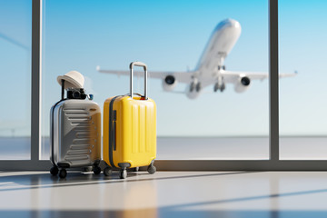

Welcome to Grace's Travel Guide
Hi, my name is Grace and this website is something I made because I have always liked learning about different places around the world. I haven't traveled everywhere yet, but I spend a lot of time looking up destinations and thinking about trips I'd like to take someday. This site is basically where I am putting all of that together in one place.

Why I Chose Travel
I chose travel for this website because there are so many places I want to see in the future. Every place has something different about it, like food, culture, and things to do. I think travel is one of the best ways to experience new things outside of your normal routine . Even just learning about places makes me want to visit them more.
Travel Ideas
Dream Destinations
Explore some of the cities and countries I hope to visit in the future.
View destinationsPacking Tips
Review simple packing ideas that can make a trip easier and less stressful.
See packing tipsTravel Videos
Watch videos about useful packing strategies and beautiful places around the world.
Watch videosAbout This Travel Guide
This travel guide brings together some of my favorite travel ideas, including dream destinations, useful packing tips, and travel videos. Whether someone is planning a future trip or just looking for inspiration, these pages provide simple ideas for making travel more organized, exciting, and enjoyable.